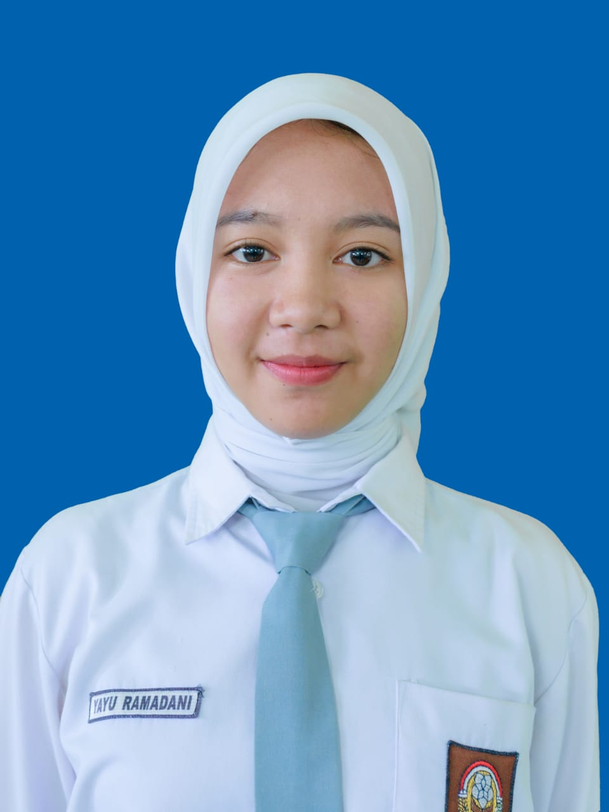
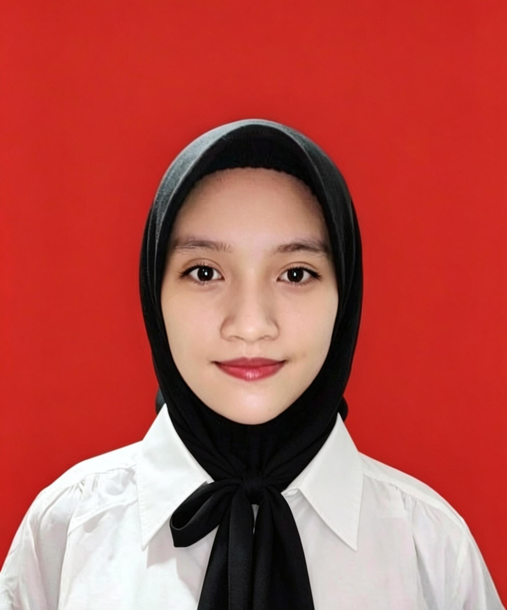

Website Biodata Mahasiswa Kelompok 4
Biodata 1
Nama : Zeki Zimah
Tempat, Tanggal Lahir : Seluma, 01 Februari 2005
Jenis Kelamin : Laki-laki
Alamat : Bengkulu
NPM : 2455201066
Jurusan : Teknik Informatika
Biodata 2
Nama : Lusi Septiana
Tempat, Tanggal Lahir : Bengkulu, 26 September 2006
Jenis Kelamin : Perempuan
Alamat : Bengkulu
NPM : 2455201058
Jurusan : Teknik Informatika

Biodata 3
Nama : Yayu Ramadani
Tempat, Tanggal Lahir : Biaro Lama, 19 Oktober 2006
Jenis Kelamin : Perempuan
Alamat : Bengkulu
NPM : 2455201034
Jurusan : Teknik Informatika

Biodata 4
Nama : Aisyah Triani
Tempat, Tanggal Lahir : Bengkulu, 27 Agustus 2005
Jenis Kelamin : Perempuan
Alamat : Bengkulu
NPM : 2455201080
Jurusan : Teknik Informatika
Biodata 5
Nama : Irfan Saputra
Tempat, Tanggal Lahir : Bengkulu utara, 24 Mei 2005
Jenis Kelamin : Laki-laki
Alamat : Bengkulu
NPM : 2455201110
Jurusan : Teknik Informatika